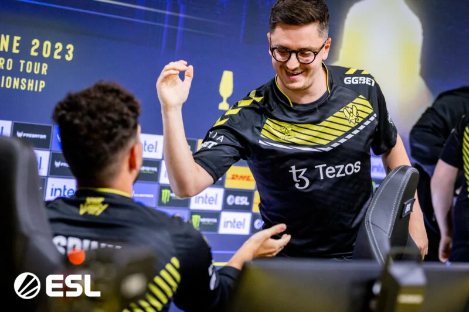

Concluída a fase de grupos, estão decididos os seis times dos playoffs e os jogos decisivos do IEM Cologne 2023, campeonato internacional de Counter-Strike: Global Offensive (CS:GO) realizado em Colônia, na Alemanha. FURIA e Imperial, as duas representantes brasileiras no torneio, já tinham caído na fase de entrada.

Os 16 times da fase de grupos estavam divididos em duas chaves e se enfrentaram, em cada uma delas,
em séries melhor de três partidas (md3), no sistema de dupla eliminação, ou seja, com chaves superior e inferior.
O top-3 de cada grupo avançou para os playoffs, sendo que o 1º colocado de cada chave passou diretamente para as semifinais,
enquanto os 2º e 3º lugares foram para as quartas de final.
Todos os jogos dos playoffs serão disputados na tradicional Lanxess Arena.
Quartas de final e semifinais serão disputadas em md3, enquanto a grande final, em md5.
O título do IEM Cologne, além de consagrar o vencedor como campeão da Catedral do Counter-Strike, classifica para o IEM Katowice
2024 e dá US$ 400 mil (equivalentes a cerca de R$ 1,8 milhão na cotação atual), do total de US$ 1 milhão (R$ 4,7 milhões) da
premiação total.